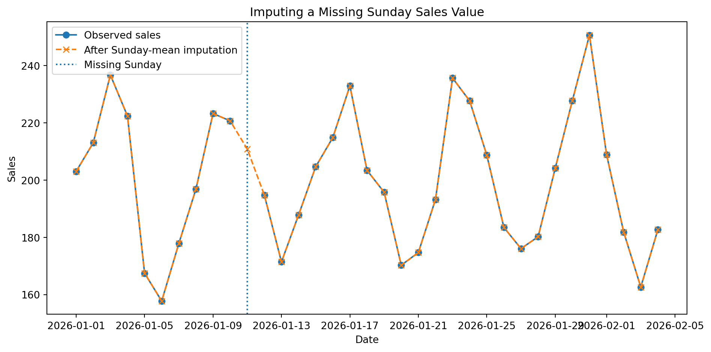
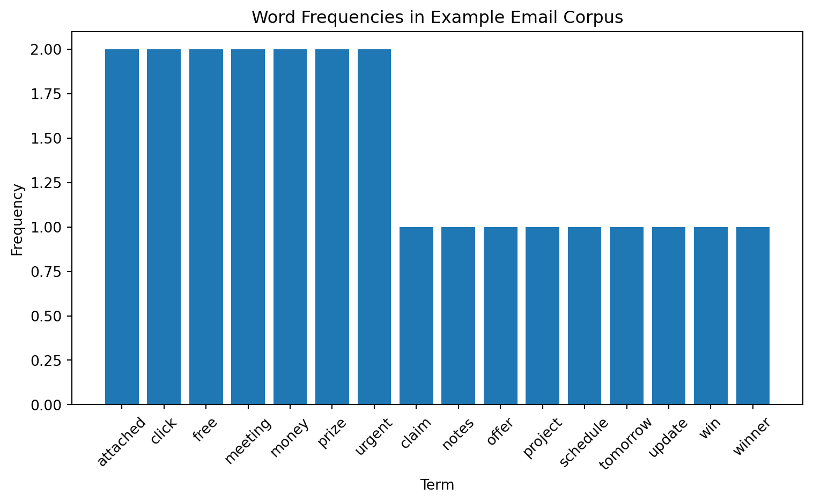
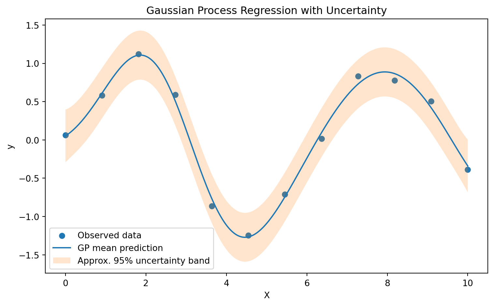

The previous chapter argued that data are produced through context, measurement systems, institutional purposes, and observer choices. Once a data scientist understands the meaning and limitations of a dataset, the next task is to transform that dataset into a form that can support modeling. Data preparation determines what a model is able to learn, what assumptions are built into the learning process, and what kinds of error the final system may produce.
In this sense, data preparation is an act of epistemological refinement. It converts a contextually produced dataset into an analytical object. Each decision (which we will discuss later) changes the structure of the evidence available to the model.
Model design then turns this prepare evidence into a formal learning system. A model is designed through assumptions, objectives, constraints, hyperparameters, evaluation metrics, and validation procedures. So our main question of this chapter are: What kind of function should be learned? What should count as success? How much complexity is justified? How should the model be tested?
This chapter develops two connected arguments:
Data preparation determines the form of evidence. Model design determines the form of learning.
Together, they represent the bridge between data understanding and machine learning.
1. Data Preparation
Data preparation is the process of selecting, cleaning, transforming, and organizing data so that it can be used by analytical or machine learning methods. In applied data science, this stage is often more consuming than model training itself. Real-world data are usually incomplete, inconsistent, duplicated, incorrectly formatted, noisy, or measured at the wrong level of granularity.
TipExample
Suppose a dataset records customer transactions. The same customer may appear under multiple IDs. Some transaction dates may be missing. Product categories may change over time. Currency values may be recorded in different formats. Refunds may appear as negative sales.
A mechanical cleaning process might remove “bad” records, but a scientific preparation process asks what each irregularity means. A missing transaction may indicate a logging failure, or may also indicate that no transaction occurred. A duplicate may be a database error, or it may represent two legitimate purchases made at the same time. An outlier may be a mistake, or it maybe the most important case in the dataset.
2. Missing Values and Inconsistencies
2.1. Why Missingness Matters
Missing data are one of the most common problems in data preparation. A value may be missing because it was not collected, not applicable, lost during transfer, intentionally withheld, corrupted by a sensor, or removed for privacy reasons. The technical symbol may be the same (NaN, NULL, blank, or None), but the meaning can differ greatly.
For example, in a medical dataset, missing income may indicate that the patient declined to answer. In a sensor dataset, missing temperature may indicate device failure. In a sales dataset, missing Sunday transaction data may indicate that the store was closed, the logging system failed, or the data file was not uploaded.
The treatment of missingness should depend on the reason for the missingness. Removing all rows with missing values is simple, but it may introduce bias if the missingness is systematic. Imputation can preserve sample size, but it may create artificial certainty if the imputed values are treated as truly observed.
A conceptual distinction is among three types of missingness:
Types
Meaning
Example
Missing Completely at Random (MCAR)
Missingness is unrelated to observed or unobserved data
A random database export error remove 2% of rows
Missing at Random (MAR)
Missingness depends on observed variables
Younger users are less likely to report income
Missing Not at Random (MNAR)
Missing depends on the missing value itself
High-income respondents avoid reporting income
These categories matter because the validity of imputation depends on the mechanism that produced the missingness. If income is missing mainly among high-income individuals, replacing missing income with the mean may distort the distribution and weaken the model’s understanding of purchasing power.
2.2. Common Strategies
Common strategies include:
Strategy
Description
Risk
Deletion
Remove rows or columns with missing values
Can reduce sample size and introduce bias
Mean/median imputation
Fill missing numeric values with central tendency
Can shrink variance and hide uncertainty
Mode imputation
Fill categorical values with most frequent category
Can overrepresent majority category
Constant imputation
Fill with “Unknown” or fixed value
Can be useful if missingness is informative
Model-based imputation
Predict missing values from other variables
Can leak information if done incorrectly
Missingness indicator
Add binary flag for whether value was missing
Useful when missingness itself carries signal
TipExample: Missing Sunday Sales
Suppose a retail store records daily sales, but one Sunday is missing. We cannot drop the missing day because if the model is learning weekly seasonality, removing that Sunday breaks the time structure. A more appropriate strategy may be impute the missing Sunday using the average of nearby Sundays.
Show code
import numpy as npimport pandas as pdimport matplotlib.pyplot as plt# Create example daily sales datadates = pd.date_range("2026-01-01", periods=35, freq="D")rng = np.random.default_rng(42)sales =200+30* np.sin(np.arange(35) *2* np.pi /7) + rng.normal(0, 10, 35)df = pd.DataFrame({"date": dates, "sales": sales})# Create one missing Sundaymissing_date = pd.Timestamp("2026-01-11")df.loc[df["date"] == missing_date, "sales"] = np.nan# Impute using average of other Sundaysdf["day_name"] = df["date"].dt.day_name()sunday_mean = df.loc[df["day_name"] =="Sunday", "sales"].mean()df["sales_imputed"] = df["sales"].fillna(sunday_mean)# Plot original and imputed dataplt.figure(figsize=(10, 5))plt.plot(df["date"], df["sales"], marker="o", label="Observed sales")plt.plot(df["date"], df["sales_imputed"], marker="x", linestyle="--", label="After Sunday-mean imputation")plt.axvline(missing_date, linestyle=":", label="Missing Sunday")plt.title("Imputing a Missing Sunday Sales Value")plt.xlabel("Date")plt.ylabel("Sales")plt.legend()plt.tight_layout()plt.show()

Figure 1: Imputing a Missing Sunday Sales Value
3. Feature Scaling
3.1. Why Scaling is Necessary
Many machine learning algorithms are sensitive to the scale of input variables. Algorithms based on distances, gradients, or regularization can behave poorly if one variable has a much larger numeric range than another.
TipExample
Suppose a health model uses blood pressure and body temperature. Blood pressure may range from 80 to 180, while body temperature may range from 36 to 40. If a distance-based model is used, blood pressure may dominate the calculation simply because its numbers vary more widely.
Feature scaling prevents numeric magnitude from being mistaken for importance.
3.2. Normalization and Standardization
Two common scaling techniques are normalization and standardization.
Min-Max Normalization
Min-max normalization transforms a feature into a fixed range, often \([0,1]\):
\[
x'=\frac{x-x_{\min}}{x_{\max}-x_{\min}}
\]
This is useful when the feature range is known and bounded.
Standardization
Standardization subtracts the mean and divides by the standard deviation:
\[
z=\frac{x-\mu}{\sigma}
\] This centers the variable around zero and expresses values in units of standardization.
Max-Abs Scaling
MaxAbs scaling is a technique used to scale the data by dividing each feature by its maximum absolute value.
\[
x'=\frac{x}{\max|X|}
\]
This method is useful when the data contains both positive negative values and we want to preserve the sign of the data while scaling it to the range of -1 to 1.
TipExample
Suppose a model uses blood pressure and body temperature to predict heart disease. Without scaling, a distance-based algorithm such as K-Nearest Neighbors may treat differences in blood pressure as much more important than differences in temperature. After scaling, both variables contribute more proportionally.
Figure 2: Comparing raw, min-max, max-abs, and standardized feature scales
4. Encoding Categorical Variables
Most machine learning algorithms operate on numerical arrays. Therefore, categorical variables must (often) be transformed into numerical representations. Encoding encodes assumptions about the relationship among categories.
There are two broad types of categorical variables:
Type
Meaning
Example
Common Encoding
Nominal
Categories have no natural order
Genre, color, city
One-hot encoding
Ordinal
Categories have a meaningful order
Low, medium, high
Ordinal encoding
Using the wrong encoding can mislead a model. For example, encoding movie genres as Action = 1, Comedy = 2, Horror = 3 implies that Horror is numerically greater than Comedy and that Comedy lies between Action and Horror. That ordering is meaningless.
TipExample
Suppose a movie dataset includes a genre variable with three categories: Action, Comedy, and Horror. OneHotEncoding creates three binary columns:
Figure 3: One-hot encoding representation of movie genres
5. Text Processing
5.1. High-Dimensional Data
Text data require specialized preparation because language is unstructured, sparse, and context-dependent. Before a model can classify emails, summarize documents, detect sentiment, or cluster topics, text must be transformed into a numerical representation.
Traditional natural language preprocessing includes:
Tokenization
Lowercasing
Stop-word removal
Stemming
Lemmatization
Vectorization
Term weighting
The specific steps depend on the task. For example, stop-word removal may be useful in topic modeling but harmful in authorship detection or legal text analysis, where function words may carry stylistic or procedural meaning.
5.2. Tokenization
Tokenization splits text into smaller units, such as words, subwords, or characters. For example:
“The movie was surprisingly good.”
may become:
["the", "movie", "was", "supprisingly", "good"]
5.3. Stop-words
Stop-words are common words such as “the”, “is”, “and”, or “of”. They are often removed because they appear frequently and may carry little topical information. In some cases (such as sentiment analysis), negation words such as “not” are crucial; removing “not” from “not good” changes the meaning.
5.4. Stemming and Lemmatization
Stemming reduces words to crude roots, while lemmatization reduces words to linguistically meaningful base forms.
Word
Stemming
Lemmatization
studies
studi
study
running
run
run
better
better
good
Stemming is faster but rougher. Lemmatization is more linguistically informed.
TipExample
In spam detection, preprocessing may convert raw email text into a matrix of term frequencies or TF-IDF values. Words such as “free”, “winner”, “urgent”, or “click” may become predictive signals.
Show code
import pandas as pdimport matplotlib.pyplot as pltfrom sklearn.feature_extraction.text import CountVectorizeremails = ["Win money now click urgent prize","Meeting schedule attached for tomorrow","Urgent winner claim your free prize now","Project update and meeting notes attached","Free money offer click now"]labels = ["spam", "not spam", "spam", "not spam", "spam"]vectorizer = CountVectorizer(stop_words="english")X = vectorizer.fit_transform(emails)word_counts = X.toarray().sum(axis=0)terms = vectorizer.get_feature_names_out()freq_df = pd.DataFrame({"term": terms,"count": word_counts}).sort_values("count", ascending=False)plt.figure(figsize=(8, 5))plt.bar(freq_df["term"], freq_df["count"])plt.title("Word Frequencies in Example Email Corpus")plt.xlabel("Term")plt.ylabel("Frequency")plt.xticks(rotation=45)plt.tight_layout()plt.show()

Figure 4: Word frequencies in the example email corpus
6. Image Preparation and Data Augmentation
Image data are high-dimensional arrays of pixel values. A small image of size \(222\times 224\) with three color channels contains 150,528 numeric values. Deep learning models can learn powerful visual representations from such data, but they often require large, diverse datasets.
Image preparation may include:
Resizing
Cropping
Normalizing pixel values
Color correction
Label verification
Augmentation
NoteDefinition: Data Augmentation
Data augmentation creates modified versions of training images to improve generalization.
Common augmentations include rotation, flipping, zooming, cropping, brightness adjustment, and small translations. If a model must recognize cats, it should recognize a cat whether the image is slightly rotated, shifted, or zoomed. Augmentation teaches the model that such transformations should not change the label.
Machine learning1 is the stage where prepared data are used to train models.
NoteDefinition: Machine Learning
A computer program is said to learn from experience \(E\), with respect to some class of task \(T\) and performance measure \(P\), if its performance at tasks in \(T\), as measured by \(P\), improves with experience \(E\).
Component
Meaning
Example
Experience \(E\)
Data or interactions used for learning
Labeled email examples
Task \(T\)
What the system must do
Classify spam
Performance \(P\)
How success is measured
Accuracy, precision, recall
7.2. Supervised Learning
In supervised learning, the model receives labeled examples. Each observation includes input variables and a known output.
Common supervised tasks include classification and regression.
Classification: predicts discrete labels.
Examples:
Fraud or non-fraud, spam or not spam.
Under-estimate, normal, over-estimate.
Disease or no disease (or belonging to what type of disease).
Regression: predicts continuous numeric outcomes.
Examples:
House price, salary.
Rainfall amount, energy demand.
Travel time.
7.3. Unsupervised Learning
In unsupervised learning, the model receives data without labeled outputs. The goal is to discover structure.
Examples:
Customer segmentation
Topic discovery
Anomaly detection
Dimensionality reduction
7.4. Reinforcement Learning
In reinforcement learning, an agent interacts with an environment and learns through rewards or penalties. Instead of learning only from a fixed labeled dataset, the agent learns by taking actions and observing consequences.
Examples:
Game-playing systems
Robotics
Dynamic pricing
Autonomous navigation
Resource allocation
AlphaGo is a famous example of reinforcement learning and search methods applied to strategic game play. The AlphaGo system combined deep neural networks with tree search and achieved superhuman performance in Go, a game long considered difficult for artificial intelligence.
8. Model Design
Model design is the process of selecting and configuring a learning system. It is a structured contest among possible representations of the problem.
A data scientist must decide:
What is the prediction target?
What features are available at prediction time?
What family of models is appropriate?
What assumptions are acceptable?
What metric reflects success?
What errors are most costly?
How much interpretability is needed?
How will the model be validated?
How will the model be maintained?
This is why model design is iterative, as discussed previously. Early results often reveal that the target is poorly defined, a feature leaks future information, a model is too complex, or the metric does not match the real decision problem.
Candidate Models
The first design decision is often the model family.
Model Family
Strength
Limitation
Linear regression
Simple and interpretable
Limited nonlinear structure
Logistic regression
Strong baseline for classification
Linear decision boundary
Decision tree
Interpretable nonlinear rules
Can overfit
Random forest
Robust nonlinear model
Less interpretable than one tree
Gradient boosting
Strong tabular performance
Require tuning
Support vector machine
Effective in high-dimensional spaces
Can be hard to scale
Neural network
Flexible representation learning
Data-hungry and less interpretable
Gaussian process
Uncertainty-aware nonparametric model
Computationally expensive at scale
9. Train, Validation, and Test Splits
9.1. Why Splitting Matters
A model that performs well on the training data may simply have memorized it. To estimate generalization performance, the data scientist must evaluate the model on data not used during training.
A common split is:
Split
Purpose
Training set
Fit model parameters
Validation set
Tune hyperparameters and compare models
Test set
Estimate final generalization performance
The test set should be used only at the end. If the test set is repeatedly used to guide model design, it stops being an unbiased estimate of future performance.
9.2. Overfitting
Overfitting occurs when a model captures noise or accidental structure in the training data rather stable patterns. A highly flexible model may achieve near-perfect training performance but fail on new observations.
Figure 6: Polynomial models with different complexity on the same dataset
10. Cross-Validation
A single train-validation split may produce unstable estimates, especially with small datasets. Cross-validation reduces this instability by evaluating the model across multiple splits.
In \(k\)-fold cross-validation2, the dataset is divided into \(k\) folds. The model is trained \(k\) times. Each time, one fold is used for validation and the remaining \(k-1\) folds are used for training.
11. Hyperparameter Tuning
11.1. Parameters Versus Hyperparameters
A model has two kinds of quantities:
Type
Meaning
Example
Parameter
Learned from data during training
Regression coefficient
Hyperparameter
Chosen before or during model selection
Tree depth, learning rate, number of neighbors
Hyperparameters control the behavior of the learning algorithm. For example:
\(k\) in K-Nearest Neighbors
Maximum depth in a decision tree
Number of trees in a random forest
Learning rate in gradient boosting
Regularization strength in logistic regression
Number of layers in a neural network
11.2. Grid Search and Random Search
Grid search tests every combination in a predefined hyperparameter grid. It is simple but can be inefficient.
Random search samples combinations from a distribution. It can be more efficient when only some hyperparameters strongly affect performance.
11.3. Bayesian Optimization
Bayesian optimization3 treats hyperparameter tuning as a sequential decision problem. Instead of blindly trying combinations, it builds a probabilistic model of performance and chooses promising configurations to evaluate next.
Data leakage occurs when information from outside the training process enters the model inappropriately. Leakage can make validation performance look excellent while real-world performance fails.
Common leakage examples include:
Scaling the full dataset before train-test splitting
Imputing missing values using full-dataset statistics
Using future information to predict the past
Including variables created after the prediction time
Accidentally duplicating observations across train and test sets
Tuning hyperparameters on the test set
Leakage is one of the most serious threats to model validity because it produces false confidence.
Pipelines
A model pipeline ensures that preprocessing steps are fit on the training data and then applied to validation or test data. In scikit-learn, pipelines are commonly used to combine imputation, scaling, encoding, and modeling into one reproducible workflow.
In Bayesian model design, the analyst specifies prior beliefs, a likelihood model, and a procedure for updating beliefs after observing data. This approach is useful when uncertainty matters, sample sizes are limited, or prior scientific knowledge should be incorporated explicitly.
TipExample
In Gaussian process regression, the model is defined through a prior mean function and covariance kernel. The kernel encodes assumptions about smoothness, periodicity, and similarity.
ImportantImportant
Choosing a kernel is a modeling assumption about the structure of the unknown function.
A Gaussian process can model nonlinear functions with uncertainty bands. It is especially useful when data are limited and uncertainty estimates are important.
Show code
import numpy as npimport matplotlib.pyplot as pltfrom sklearn.gaussian_process import GaussianProcessRegressorfrom sklearn.gaussian_process.kernels import RBF, WhiteKernelrng = np.random.default_rng(42)# Training dataX_train = np.linspace(0, 10, 12).reshape(-1, 1)y_train = np.sin(X_train).ravel() + rng.normal(0, 0.2, X_train.shape[0])# Test gridX_grid = np.linspace(0, 10, 300).reshape(-1, 1)# GP modelkernel = RBF(length_scale=1.0) + WhiteKernel(noise_level=0.1)gp = GaussianProcessRegressor(kernel=kernel, random_state=42)gp.fit(X_train, y_train)y_mean, y_std = gp.predict(X_grid, return_std=True)plt.figure(figsize=(8, 5))plt.scatter(X_train, y_train, label="Observed data")plt.plot(X_grid, y_mean, label="GP mean prediction")plt.fill_between( X_grid.ravel(), y_mean -2* y_std, y_mean +2* y_std, alpha=0.2, label="Approx. 95% uncertainty band")plt.title("Gaussian Process Regression with Uncertainty")plt.xlabel("X")plt.ylabel("y")plt.legend()plt.tight_layout()plt.show()

Figure 8: Gaussian process regression with uncertainty bands
14. Automated Machine Learning and Neural Architecture Search
14.1. AutoML
Automated Machine Learning4, or AutoML, attempts to automate parts of the model design process, including preprocessing, model selection, hyperparameter tuning, and sometimes feature engineering.
NoteDefinition
AutoML is a field that aims to make machine learning decisions in a data-driven and automated way, allowing systems to determine strong approaches for particular applications.
AutoML can be useful because model design involves many repetitive and technical choices. However, AutoML does not remove the need for data understanding. An AutoML system can optimize a metric, but it cannot by itself determine whether the metric represents the real-world objective, whether the data are biased, or whether the model is ethically appropriate.
14.2. Neural Architecture Search
Neural Architecture Search, or NAS, automates the search for neural network architectures. Instead of manually designing every layer, filter size, and connection pattern, NAS uses search algorithms to explore possible architectures.
EfficientNet5 is a well-known example of architecture design and scaling. It is a compound scaling method that balances network depth, width, and input resolution, using neural architecture search to design a baseline network and then scaling it efficiently.
Data preparation and model design are the technical core of applied data science. They translate contextual understanding into computational learning.
Data preparation determines how the world is represented to the model. Missing values, scaling choices, categorical encoding, text preprocessing, image augmentation, and pipeline construction all shape what the model can learn. They encode assumptions about measurement, similarity, relevance, and uncertainty.
Model design determines how learning occurs. The data scientist must choose among supervised, unsupervised, and reinforcement learning paradigms; select model families; tune hyperparameters; prevent overfitting; validate performance; and balance accuracy against interpretability, stability, fairness, and cost.
The central lesson is that successful data science is achieved by constructing a reliable chain from prepare evidence to validated learning. A strong model is one whose data preparation, design assumptions, validation strategy, and decision context are scientifically defensible.
Mitchell, Tom M. Machine Learning. McGraw-Hill Series in Computer Science. McGraw-Hill, 1997.↩︎
Kohavi, Ron. “A Study of Cross-Validation and Bootstrap for Accuracy Estimation and Model Selection.” Proceedings of the 14th International Joint Conference on Artificial Intelligence - Volume 2 (San Francisco, CA, USA), IJCAI’95, August 20, 1995, 1137–43.↩︎
Snoek, Jasper, Hugo Larochelle, and Ryan P. Adams. “Practical Bayesian Optimization of Machine Learning Algorithms.” arXiv:1206.2944. Preprint, arXiv, August 29, 2012. https://doi.org/10.48550/arXiv.1206.2944.↩︎
Hutter, Frank, Lars Kotthoff, and Joaquin Vanschoren, eds. Automated Machine Learning: Methods, Systems, Challenges. The Springer Series on Challenges in Machine Learning. Springer International Publishing, 2019. https://doi.org/10.1007/978-3-030-05318-5.↩︎
Tan, Mingxing, and Quoc V. Le. “EfficientNet: Rethinking Model Scaling for Convolutional Neural Networks.” arXiv:1905.11946. Preprint, arXiv, September 11, 2020. https://doi.org/10.48550/arXiv.1905.11946.↩︎